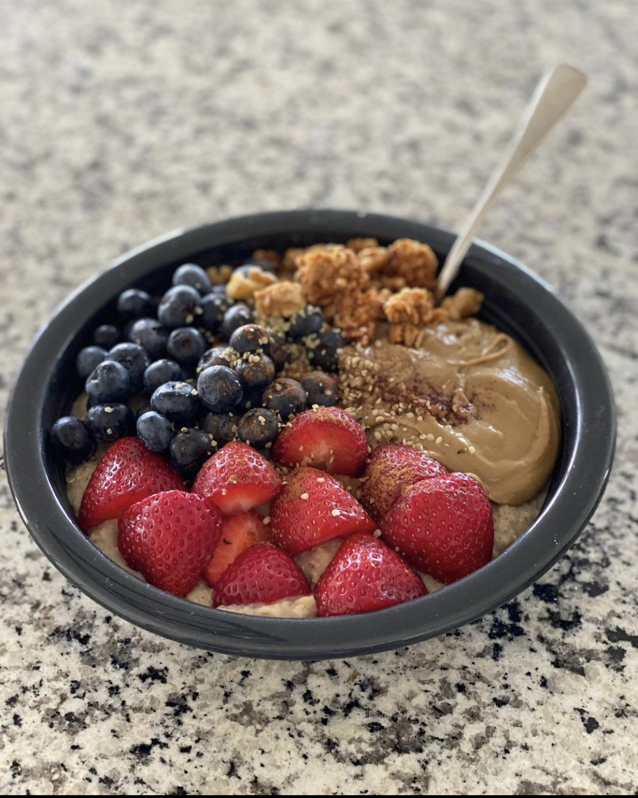

Protein Oatmeal

This one is oat-ally awesome, bro!
Ingredients:
- 1 scoop of vanilla plant-based protein powder
- 1 cup of dry quick oats
- 1 tbsp of chia seeds
- 1 tbsp of hemp seeds
- 1 cup of blueberries
- 1 cup of strawberries
- 2 tbsp of sunflower seed butter
- Cinnamon
Optional:
- 1 serving of granola
- 2 squares of 100% Cacao Dark Chocolate
Steps:
- Boil 1.5 cups of water in a pot. Add in your quick oats, lower heat to medium,
and stir for 1 minute.
- Remove pot from heat and add 1 scoop of vanilla plant-based protein powder. Stir in 1 tbsp of chia seeds and cinnamon.
- Serve in a bowl. Top with blueberries, strawberries, and hemp seeds. Optional: Top with granola and dark
chocolate squares.
For maximum results, eat this meal while doing heavy sets of deadlifts!!!